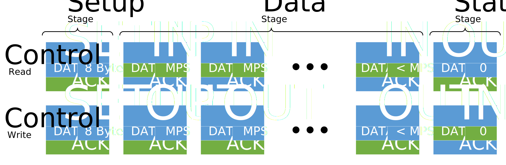
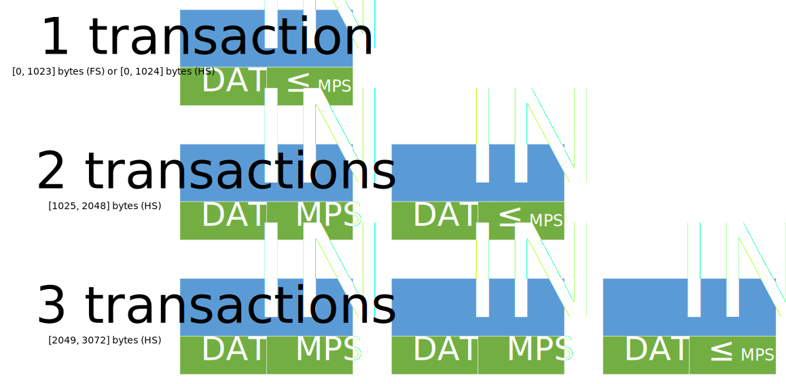

本文详细地解释了USB 2.0的传输策略，力求将USB 2.0标准中的概念进行整合，并以逻辑严密、条理清晰的方式表现出来，以便研究USB 2.0的传输策略之需。
在阅读本文前，强烈建议读者首先阅读USB 2.0标准手册和基本概念，或者对USB 2.0的基础概念和数据流模型有一定的认识。建议在阅读完本文后阅读USB 2.0标准中的相关部分。
原创文章，转载请注明出处：MetroCores, www.metrocores.com.
USB 2.0的数据传输设计思路
咳咳，这似乎是个很大的话题。虽然先讲这个话题似乎不符合我们先思考后总结的习惯，但是我认为更重要的还是首先理解概念，之后再用概念来指导我们的设计，这也是符合设计方法学的思路。
言归正传，USB 2.0的数据传输方式是经过精心设计的，最主要的目的就是：在尽可能降低设备的设计复杂度的前提下，提供多种传输方式，以应对不同场合的需要。这样做的原因也很简单：Host的部分可以被复用，而且已经有了完善的解决方案（包括Host Controller、USB总线驱动和USB设备驱动）；而Device的数量远大于Host，因此应该优先考虑Device的设计复杂度。
在USB标准注1中，关于数据传输的定义比较分散，我也只能做到管中窥豹，不过这对我们理解USB 2.0还是很有帮助的。
Host is Master, Device is Slave
这个算是USB 2.0中最重要的概念之一了。为了降低Device的设计复杂度，Device被定义为只能被动接受来自Host的请求，包括设备配置和读写。我们来举几个例子：
- 在Device插入时，Host会发送一系列的请求，以向Device请求设备的必要信息，Device必须及时回应。
- 在从Device读取数据时，Host会首先向Device发送读取的请求，以向Device请求所需数据，Device可以在合适的时机返回Host所请求的数据。
- 在向Device写入数据时，Host会首先向Device发送写入的请求，以请求Device接收所需数据，Device可以在合适的时机接收Host所提供的数据。
可以看到，以上的几种情况都是由USB Host进行主动请求的，而Device只能在有限的范围内选择接受或者拒绝。这种设计虽然很大程度上剥夺了Device的主动权，但也确确实实简化了Device的设计，可以说是各有利弊吧。
Host虽然掌握着主动权，但这也就意味着Host必须承担更多的“责任”。USB标准规定，Host可以应对Device的所有需求，无论Device提出了什么条件，只要是符合标准的，Host都必须接受；但Host必须充分照顾Device的感受，对于Device无法响应的情况，Host必须准备好“紧急预案”。这么看来，虽然Host掌控所有的传输，但却要处处为Device着想，也算是难为它了。
这种设计思路也影响了下面提到的其他概念。我们常说USB 2.0是基于轮询 (polling)的协议，而不是基于中断 (interrupt)注2的协议，就是这个原因。可以说，这是传输策略的根本。
由Device提供的Pipe配置
在USB 2.0标准手册和基本概念中，我们提到了Pipe的概念。在USB 2.0中，Pipe的配置是根据Device的Interface和Endpoint的相关描述符得到的，Host必须接受来自Device的相关配置，并且建立合适的传输通道，也就是Pipe。
在USB标准注1中，我们提到了Default Pipe和Endpoint 0，这是Device在配置前就可以使用的，目的就是完成其他Pipe的配置。在正确配置之前，其它Pipe和Endpoint都是无效状态。
可变长度的Data Packet
由于Device无法主动完成传输，Host无法在传输前确定需要传输的数据量，不论是读（无法确认Device有多少待发送的数据）还是写（无法确认Device有多少空间可以被写入）。因此，需要提供可变长度的Data Packet，以满足不同情况的需求。严格来说，Data Packet需要一套机制来确认Data Packet的传输已经结束注2，但我们可以暂时不用关心这个问题。
在讲到Descriptor的时候，我们会知道Data Packet的最大长度是由Endpoint Descriptor进行配置的，且每个Transaction只能有一个Data Packet。对于超过最大长度的传输，可以将其分为多个Transaction来传输，但是Transaction的数量仍受到其他方面的限制（例如传输类型和Frame/Microframe的长度）。
灵活的传输类型选择
对于传输类型大家应该多少有些了解。USB 2.0标准注1中定义了4种传输类型。我翻阅过不少网上关于USB 2.0的文章，感觉虽然大家都知道这4种传输类型之间的区别，但能它们的原理都说清楚的还是不多。在本文后面的章节中，我们将会对传输类型进行相对完整的介绍、特点和限制。
Frame & Microframe
USB 2.0标准注1中定义了Frame和Microframe，目的我觉得主要有两个：一个是用来同步Host和Device中的Frame Number，并提醒Device开始进行下一轮传输；另一个则是为各种传输模式提供合适的传输时机。相对来说后者更为重要。
那么问题来了，所谓的“传输时机”是怎么回事呢？后面讲到Descriptor时会提到bInterval这个参数，这同样是在Endpoint Descriptor中定义的。我们知道，USB 2.0是基于轮询 (polling)机制的，因此Host会以数个Frame为间隔轮流向Device发起请求，间隔值正是由bInterval进行设置的。并且，一次传输被限制为只能在Frame/Microframe内部，以免影响下一个Frame/Microframe的传输。
错误检测和恢复机制
最后就是错误检测和恢复机制了，这方面可是事关数据正确性的大事。看过前面这个图的同志应该能发现两件事：
{kind=link}
- Token Packet和Data Packet都是有CRC校验的。也就是说，对于这两种Packet，我们可以得知是否被正确传输。
- Handshake Packet并没有CRC校验。但是，Handshake Packet同样是非常重要的，它表明了这次传输是否被正确接受。因此在USB标准注1中提出了Data Toggle Synchronization的概念，通过Data Packet中的PID域来表明当前的Transaction是否是上一个Transaction的重传注3，从而可以得知上次传输的Handshake Packet是否被正确接受。
在检测到错误之后，接下来要做的事情就是从错误中恢复。这种时候要根据具体情况来选择重新传输或是中止传输，请参照后续文章中关于Device的状态机的设计部分。
USB 2.0的传输格式
接下来的部分都是照本宣科，大概就是相当于语文课上“阅读并背诵全文”的那种内容。我就按照标准试着翻译下吧。
首先说明一下，在USB中除了CRC Field的所有Packets的存储和传输都是LSb First，也就是低位在前、高位在后。还有，PID虽然有8位，但实际上只有4位有效位，剩下4位是前四位的反码，用于确保PID被正确设置和传输。PID的格式如下表所示。
| (LSb) | (MSb) | ||||||
|---|---|---|---|---|---|---|---|
| PID0 | PID1 | PID2 | PID3 | PID0 | PID1 | PID2 | PID3 |
以下内容省略SYNC Field，因为这个东西是由SIE自动发出的，开发人员不需要关心。
Token Packets
Token Packets的格式如下表所示。
| Field | PID | ADDR | ENDP | CRC5 |
|---|---|---|---|---|
| Bits | 8 | 7 | 4 | 5 |
PID
Token Packets中的PID定义如下表所示。
| PID Name | PID<3:0> | Description |
|---|---|---|
| OUT | 0001B | 从Host到Function，7位ADDR + 4位ENDP |
| IN | 1001B | 从Function到Host，7位ADDR + 4位ENDP |
| SOF | 0101B | Start-of-Frame，11位Frame Number |
| SETUP | 1101B | 特殊的OUT Token，与OUT Token格式相同 |
OUT Token和IN Token的定义很明显，这里就不多说了。
SOF Token指代SOF Packet，用于Frame/Microframe之间的同步，他把数据域中的ADDR和ENDP整合为11位的Frame Number，长度没有区别。
SETUP Token是特殊的OUT Token，主要用于控制传输中的Setup Stage。USB标准注1规定，Device对于SETUP transaction必须回应ACK（表示成功接受）或者不回应（表示数据被破坏），不能有其它的回应。
ADDR
ADDR是Host分配的地址 （这个地址对于Device作用不大，对于Hub比较有用，知道有这个数据就行），取值范围为0到127，其中0保留给未配置设备使用。
ENDP
ENDP就是端点序号，取值范围为0到15。
CRC5
我就写个表达式：G(X) = X^5 + X^2 + 1，懂的同学应该就知道这是什么意思了吧。不过要注意的是，在计算完表达式后，还需要进行取反操作，而且是以MSb First的方式进行存储的，即发送的时候先发送最高位、后发送低位，CRC16也是同理。这应该是考虑到了CRC的计算特点。
Data Packets
Data Packets的格式如下表所示。
| Field | PID | DATA | CRC16 |
|---|---|---|---|
| Bits | 8 | 0-8192 | 16 |
PID
Data Packets中的PID定义如下表所示。
| PID Name | PID<3:0> | Description |
|---|---|---|
| DATA0 | 0011B | 数据包的偶数位 |
| DATA1 | 1011B | 数据包的奇数位 |
| DATA2 | 0111B | 用于HS下的高速等时传输的IN transaction |
| MDATA | 1111B | 用于HS下的高速等时传输的OUT transaction或分离传输 |
感觉Data Packets中的PID突然抛出了好多概念……不急，我们等到传输类型的部分再仔细讲解。
DATA
DATA Field存放的当然就是要传输的数据啦。不过要注意，DATA Field要求必须是整Bytes传输，即Bits数为8的倍数，而且DATA Field的实际长度还跟传输类型和配置有关，这又是一个容易出错的地方。DATA Field可以为空，表示没有数据需要传输，但是Data Packets并不能被省略哦。
CRC16
G(X) = X^16 + X^15 + X^2 + 1，其他和CRC5相同。
Handshake Packets
Handshake Packets只有一个PID，所以就不需要写表格了。
PID
Handshake Packets中的PID定义如下表所示。
| PID Name | PID<3:0> | Description |
|---|---|---|
| ACK | 0010B | 接收方成功接收了数据 |
| NAK | 1010B | 接收状态的Device不能接收发送的数据，或者发送状态的Device不能发送数据 |
| STALL | 1110B | Endpoint处于停止状态，或者Control Pipe的请求不支持 |
| NYET | 0110B | Device成功接收了数据，但暂时无法接收下一组数据（仅限HS） |
Handshake Packets的PID指代传输是否正确进行。这其中的后面三个状态容易被混淆起来，我们有必要仔细了解。
NAK表示当前传输的数据没有被Device正确地发送或接收。一般发送NAK就是要求Host再一次发起之前的请求。对于HS下的情况，Host还可以先发送PING transaction来“试探”一下Device是否已经可以接收数据。
NYET其实和ACK类似，表示Device已经成功接收了数据，只是暂时还不能处理下一组数据而已。对于NYET的处理方法和HS下的NAK类似，就是发送PING transaction。
STALL是比较有意思的回应，表示的其实有两种情况：对于Control Pipe（对应Endpoint 0），STALL意味着Device不支持来自Host的请求，通常是由于SetConfiguration()、SetInterface()或者SetFeature()请求了不受Device支持的配置、接口或者特性引起的；而对于使用interrupt和bulk这两种传输方式的Endpoint，则意味着Endpoint被Host配置为Halt状态，此时Device对于这些Endpoint的请求必须回应STALL。STALL的具体用法就放在Descriptor部分来说明吧。
Special Packets
这个……实在是懒得说啊，虽然Special Packets有四种（其中一种是复用的，而PID为0000B的情况不使用），但对我们来说比较有用的也就是PING Transaction了吧。
实际上，PING Token Packet的格式和OUT Token Packet基本一致（此时的PID为0100B），Handshake Packet的格式也相同，只是PING transaction不带Data Packet而已注4。Device可以根据实际情况回应ACK、NAK和STALL，含义和Handshake Packets相同。注意Device此时不能回应NYET，因为传输并未进行。USB 2.0标准没有规定PING的发送间隔。
PING transaction的提出，解决了OUT Transaction中的效率问题。我们知道，OUT transaction是从Host到Device的传输。Device此时可能无法接收数据，但是Device只能等到OUT Transaction的Handshake Packet才能回应是否已经接收了数据，而且在LS/FS中，因为没有询问Device是否空闲的机制，故每次重新传输都需要进行完整的OUT Transaction，这会极大地浪费总线带宽。因此，PING Transaction的作用就是，在Device报告下次传输无法正常进行时，使用占用较低总线带宽的方式来询问Device是否准备好进行下一次传输。这是HS中的一项重大改进。
关于PING Transaction的具体发送时机和与NACK的对比我打算放到设备状态机的部分再说，感兴趣的同学可以先看看USB标准注1中的Section 8.5.1。
USB 2.0的传输类型
在开始介绍USB 2.0的传输类型之前，我们再（不厌其烦地）回顾下几个基本概念：
- USB传输的最基本单位是Packet。Packets包括Token Packets、Data Packets和Handshake Packets，对应的时间段分别被称为Token Phase、Data Phase和Handshake Phase。
- 多个Packets可以按照一定规律组合成Transaction。我们通常用Token Packets中的PID来区分Transaction，例如IN Transaction、OUT Transaction等。每种Transaction的Packets排列方式是固定的。
- 多个Transaction可以按照一定规律组合成Transfer。USB 2.0标准注1中规定了4种Transfer Types，下面就会介绍这4种Transfer Types的格式。要注意一次Transfer必须在一个Frame/Microframe内。
嗯，相信说到这里Transfer的概念已经比较清楚了。之后再提一下Transaction的格式。为了表述方便，我在下文中统一用如下形状来表示一次Transaction。
可以看到，对于一个Transaction，可以划分为三个Phase，每个Phase都用适当的文字表示Packets所具有的属性，其中Data Packets的数据长度以Bytes为单位，并且用MPS来表示wMaxPacketSize。我们知道Token Phase是一定存在的，而Data Phase和Handshake Phase虽然不一定存在，但从图上还是容易区分这两种Phase的，这种表示方法应该没毛病。另外，我用蓝色表示从Host到Function，绿色表示从Function到Host。
接下来就是4种传输类型的详细解释。为了方便，我们仅列出正确传输的情况，对于其他情况的讨论放在USB Device状态机部分。
Control Transfers
即控制传输，是USB 2.0传输中最高的优先级注5。只有Endpoint 0可以作为Control Transfers的端点，且Endpoint 0必须存在。Control Transfers用于Device的枚举和配置。
传输序列

Control Transfers的传输序列是最复杂的了。根据USB标准注1，我们可以划分成3个阶段。
Setup Stage
其实就是一次SETUP Transaction，内容是USB Device Requests，读写都是一样的格式，且长度为8个字节。注意Data Packets的PID都是DATA0。
Data Stage
由0到多个Token方向与读写方向一致的Packets组成，表示要传输的控制数据。在Packets数量为0时，Data Stage不存在，此种情况只会发生在控制读取的情况下。这些Packets的PID从DATA1开始，每隔一个Packets就在DATA0和DATA1之间跳转一次。
Data Stage要求最后一个Packets之外的数据长度都为wMaxPacketSize，且最后一个Packet的数据长度必须小于wMaxPacketSize，当然可以为0。
对于LS Device，wMaxPacketSize为8 bytes；对于HS Device，wMaxPacketSize为64 bytes；而对于FS Device，则可以设置为8、16、32或64 bytes，这可以通过读取Device Descriptor中的bMaxPacketSize0来确定。我们应当遵循上述的规则来传输控制数据。
Status Stage
由一个Token方向与读写方向相反的Packets组成，表示控制传输的结果。我们在前面提到，Function提出的合理请求Host都必须接受，因此Status Stage反映的是Function是否能够处理此次传输，不论读写方向如何。USB标准定义了一套完整的应答机制，在此我们不再详细说明。
要注意的是，对于控制读取而言，Status Stage既可能是OUT Transaction（对于LS/FS），也可能是PING Transaction（对于HS）。
限制条件
USB标准提到，对于LS/FS Device，Control Transfer的时间最多为一个Frame中的10%；对于HS Device，则最多为20%。由于控制传输一般不用在数据量大的场合，所以能够传多少数据包对Device的开发人员来说可以不需要关心。不过呢，也正是由于数据的长度可变，Host可能需要先读取部分数据，以在发起传输前确定控制读入的数据量，这可以通过得到Device Descriptor得到。
Isochronous Transfers
即等时传输，传输优先级排在第二位。等时传输的特点十分鲜明：高优先级、低延迟、实时性高、无重传机制，主要用于视频、音频等对实时性要求较高的场合。
传输序列

首先，LS不支持Isochronous Transfers，不用找了。
其次，FS和HS对于wMaxPacketSize的最大值定义并不相同。FS为1023 bytes，HS则为1024 bytes，而且HS中Host最多可以向一个Endpoint发起3次transactions，此时wMaxPacketSize需要被配置为1024 bytes，这种情况被称为高带宽传输(high bandwidth transfer)。（所以1023是个什么情况，强迫症要发作了啊啊啊）
最后就是要解释一下传输序列了。前面已经说过Isochronous Transfers没有Handshake Phase。为了方便叙述，我分成三种情况来讨论。
FS Device
在FS下，Host最多可以发起1个transaction，且使用DATA0作为PID。容易得到FS的最大传输速度为1,023 KB/s注6，对于12 MHz的总线频率来说，确实也不能有更高的要求了。
HS Device, Read Sequences
在HS下，Host最多可以发起3个transactions，并且以DATA2、DATA1、DATA0的顺序使用PID，并且最后一个一定是DATA0。Device在收到Token Packet之后即准备传输，传输的方式与Control Transfer相同，都是优先填满前面的IN Transactions注7。容易得到HS的最大读取速度为24,576 KB/s，这个速度似乎不大能让人满意啊。
HS Device, Write Sequences
和读取的情况类似，唯一不同的是使用的PID。在写入的情况下，最后一个Data Packet的PID可能是DATA0（1个transaction）、DATA1（2个transactions）或者DATA2（3个transactions），而前面的Data Packets统一使用MDATA作为PID。传输的方式也是优先填满前面的OUT Transactions。容易得到HS的最大写入速度也为24,576 KB/s。
等时传输模式选择
看到这里可能会有疑问，为什么还有等时传输模式选择呢？理由很简单：Client、Host Controller和Device这三个部分的时钟并不一定是同步的，如果没有做好同步处理，就会导致数据的overrun或者underrun。因此，这里就需要根据实际情况来选择时钟的同步方式，这就是等时传输模式的选择。
等时传输模式共有3种，下面一一说明。
Synchronous
即同步传输，表示Client和Device的时钟都与SOF同步。这种情况下Client和Device都必须控制好数据的传输时机，否则就会造成overrun或者underrun。这对于Device来说通常是不好处理的，因为这意味着Device必须要动态调整SIE和FIFO之间的吞吐量，而这对Device来说通常是比较复杂的。
Asynchronous
即异步传输，表示Client和Device的时钟都不与SOF同步 （也就是Free running），且Client和Device的时钟也为异步。这种模式下，数据的发送方不需要考虑同步，而接收方则需要“消耗”发送方传来的数据，因此这种模式更适合Host读入的情况。
Adaptive
即自适应传输，表示Client和Device的时钟都不与SOF同步，但Client和Device的时钟为同步。这种模式下，数据的接收方需要向发送方反馈其接收的情况，发送方则需要根据反馈来调整数据的发送时机。这通常需要使用额外的Endpoint，并且发送的反馈的数据格式也应该要事先约定好。具体的做法可以参考USB标准注1中的Section 5.12.4.2。这种模式更适合Host写入的情况。
限制条件
USB标准提到，对于FS Device，Isochronous Transfer的时间最多为一个Frame中的90%；对于HS Device，则最多为80%。前面已经提到FS的最大速度为1,023 KB/s，而HS则为24,576 KB/s。Isochronous Transfer会与后面提到的Interrupt Transfers和Bulk Transfers共享带宽。
Interrupt Transfers
即中断传输，传输优先级排在第三位。Interrupt Transfers与Isochronous Transfers比较接近，都是以固定的时间间隔进行传输，最大的区别就在于Interrupt Transfer通过牺牲实时性来换取数据的校验和重传机制。
传输序列
Interrupt Transfers的传输序列和Isochronous Transfers颇为不同，使用的是DATA0、DATA1交错的PID发送方式。用法也很简单：不管上一个Transaction用的是哪个PID，下一个Transaction只要换成另外一个就行了注8，就算是跨SOF也是一样。当然，在遇到Bus Reset、SetInterface()等情况时，下一个Transaction的PID需要从DATA0开始。
对于wMaxPacketSize，LS最大为8 bytes；FS最大为64 bytes；HS最大为1,024 bytes，外加最多可以配置为3个Data Packets。
限制条件
USB标准提到，对于FS Device，Isochronous Transfer的时间最多为一个Frame中的90%；对于HS Device，则最多为80%。LS的最大速度为8 KB/s，FS的最大速度为64 KB/s，而HS则为24,576 KB/s。
Bulk Transfers
即批量传输，传输优先级是最低的。Bulk Transfers与Control Transfers类似，传输的时机是与SOF异步的。Bulk Transfers虽然优先级最低，但由于在一个Frame/Microframe中可以发起多个Bulk Transfers，因此可以传输的数据量理论上是最大的。Bulk Transfers适用于高准确性、低实时性的传输，例如文件复制等。需要注意的是，LS并不支持Bulk Transfers。
传输序列
在传输序列上，Bulk Transfers与Interrupt Transfers反倒是十分类似了，区别就只在于wMaxPacketSize可以设置的最大值了。同样都是基于DATA0、DATA1交错的PID发送方式。这里就不多做解释了。
对于wMaxPacketSize，FS最大为64 bytes；HS最大为512 bytes。
限制条件
USB标准提到，对于FS Device，Isochronous Transfer的时间最多为一个Frame中的90%；对于HS Device，则最多为80%。最大速度没有其他限制。
各种传输的时间估计
这个可以去看看USB标准注1的Section 5.11.3，我实在是懒得贴了……
总结
为了考虑多种可能的传输情况，USB 2.0标准中关于传输的部分设计得较为复杂。不过在看完本文后，应该已经了解了关于传输的大部分内容，剩下的也基本上都是平时不怎么需要在意的设计细节了。
注释
- USB Specification Revision 2.0
- 其实就是EOP，EOP并不是Packet，这点与SO不同。
- 注意Data Toggle Synchronization是在多个Transaction之间进行同步验证的。也就是说，Handshake Packet是否正确发送只能在下次传输开始后才能知道，而且下次的传输可能会因为各种原因导致Data Packet中的PID应当恢复到初始状态，从而无法判定Handshake的正确性。
这个问题仔细想想还是很蛋疼的 - PING transaction是为数不多的没有Data Packet的transaction。我没有找到USB 2.0标准中的相关文字，但是Figure 8-30中可以看到PING transaction确实没有Data Packet。
- 准确来说SOF Packets最高，不过呢，who fxxking cares（滑稽
- 所有的“传输速度”都指的是每个Endpoint的速度。实际上，应该可以在一个Frame/Microframe中发起多个不同Endpoint的Non-bulk Transfer，不过这还需要验证。
- 我没有在标准中找到传输的数据使用更少的transactions的情况，例如在有transaction的情况下发送1024 bytes的数据。猜测应该是忽略前面的transactions，转而使用最后的transactions？
- 有一种特殊情况是，上一个Transfer是Isochronous Transfers的写入，且上一个Transaction为DATA2。我没有在标准中找到这种情况应该如何处理，估计这也需要验证才行了。
（买不起USB协议分析仪心好痛）